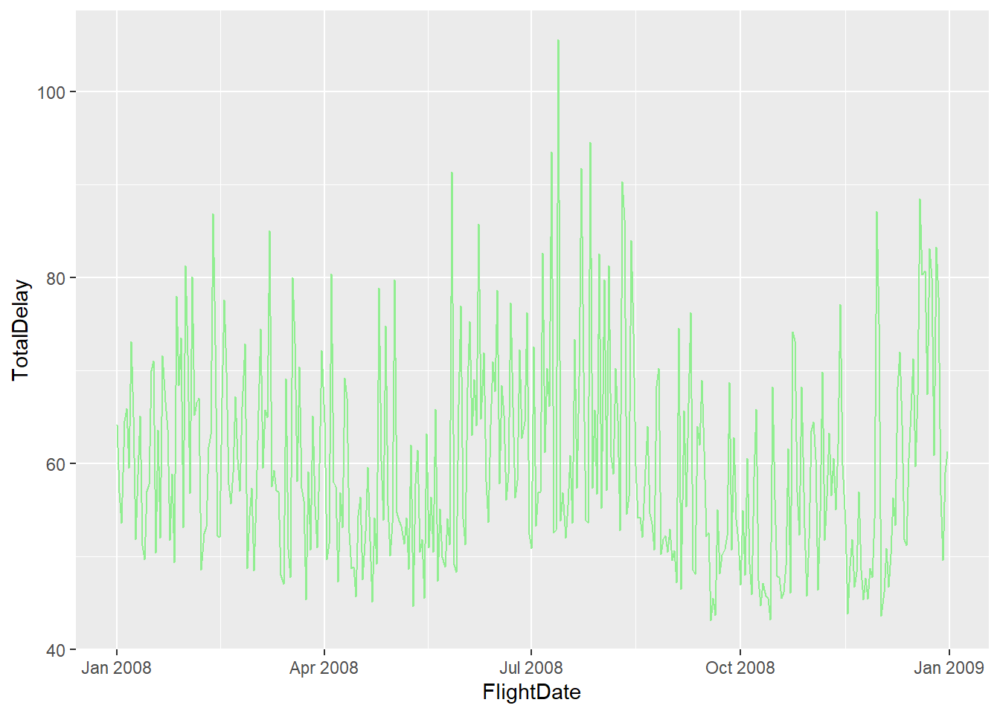
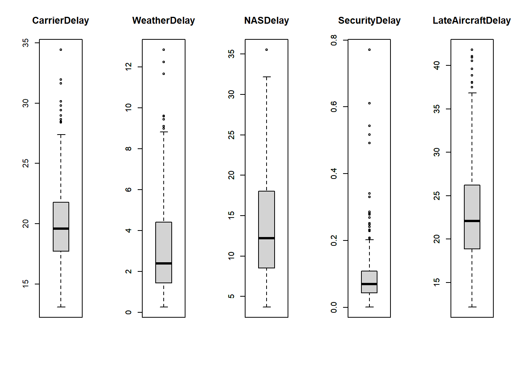
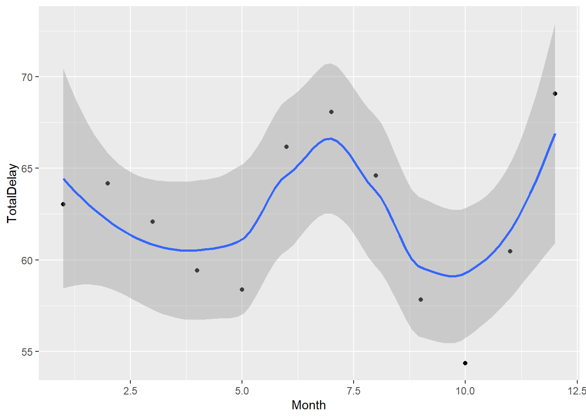
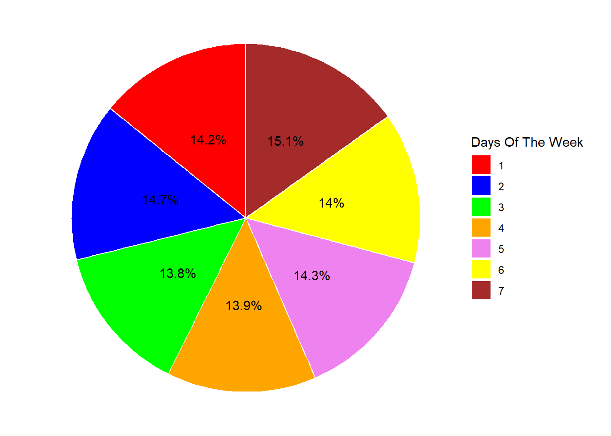
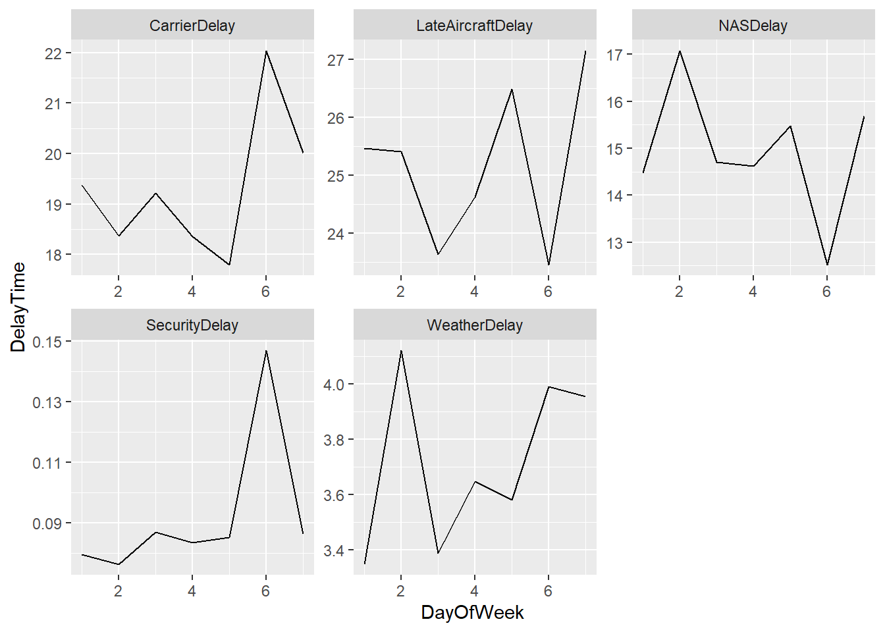
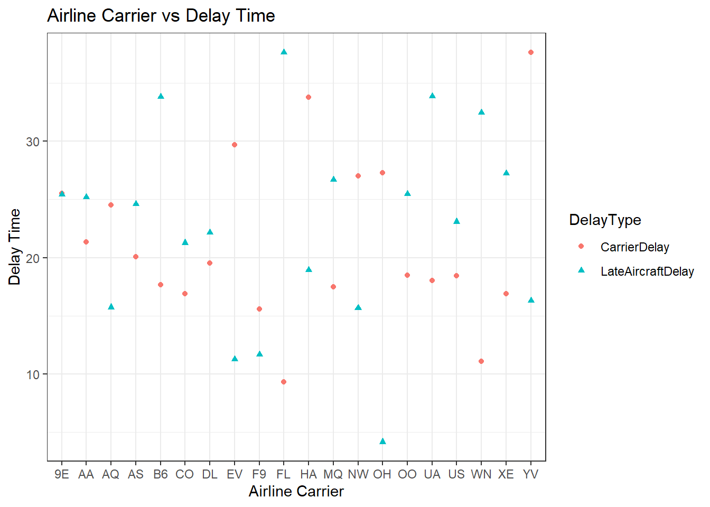
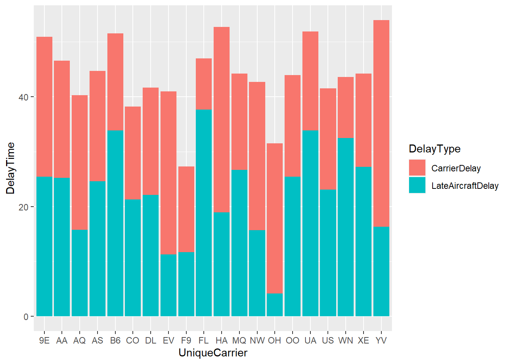

library(tidyverse)
library(ggplot2)
knitr::opts_chunk$set(echo = TRUE, warning=FALSE, message=FALSE)
setwd("D:/MyDocs/Class Slides/DACSS601/601_Spring_2023/posts/_data")
flights <- read.csv("DelayedFlights.csv") %>%
select(-"Cancelled", -"CancellationCode", -"Diverted", -"DepTime", -"CRSDepTime", -"ArrTime", -"CRSArrTime", -"ActualElapsedTime", -"CRSElapsedTime", -"X", -"AirTime", -"ArrDelay", -"DepDelay", -"FlightNum", -"TailNum", -"TaxiIn", -"TaxiOut") %>%
mutate(FlightDate = as.Date(paste(`Year`, `Month`, `DayofMonth`, sep = "-"))) %>%
select(-"Year", -"DayofMonth")
flights <- flights[!is.na(flights$LateAircraftDelay), ]
head(flights)DACSS601: Data Science Fundamentals Final Paper
final_project
Flight Delay Analysis
Abstract
The overall goal of this project is go through Flight Delay Data over the course of an entire year to find patterns of when flight delays are more prone to happens. Airline delays can cause unnecessary disruptions in people’s lives. The problems caused by flight delays include missing important business meetings or failing to catch another connecting flight which can lead to further delays. This could result in additional costs as people are stuck at the airport for an extended period of time and have to make more purchases at the airport as a result. Moreover, it is not a commonly known fact that airlines are actually obliged to post flight delay data on their website. Many airlines fail to meet this obligation which could easily help passengers avoid flights with a history of delays and cancellations. Through this project, I aim to analyze flight delays for different airline carriers over the course of the year and find patterns of flight delays.
Introduction
I used the DelayedFlight.csv file which contains data about local airline carriers making flight trips all over the US from Jan 2008 to Jan 2009. This version of the dataset was compiled from the Statistical Computing Statistical Graphics 2009 Data Expo. The original dataset contains 30 columns with information regarding daily flight trips by different airline carriers all over the US for every day of the year. The information captured by this dataset includes - the departure and arrival times of all flights making trips on a particular day, flight carrier name and flight number information, the origin and the destination airports, and 5 columns marking delays - CarrierDelay, WeatherDelay, NASDelay - Delays and cancellations attributable to the National Aviation System(non-extreme weather conditions, airport operations, heavy traffic volume etc), SecurityDelay and LateAircraftDelay. Our goal is to find patterns in these delay columns and figure out times of peak delays. To go about this, we process the data accordingly -
- Remove a lot of redundant columns which do not offer any information relevant to the problem we are trying to analyze.
- Combine the
Year,MonthandDayofMonthcolumns into a singlearrival_datecolumn. - We remove any columns with N/A values present.
Doing this eliminates 17 columns immediately from our dataframe which significantly speeds up our computation and eliminates around 500,000 rows from our massive dataset.
Analysis
In order to solve our problem, we need to find the following information -
- Delay values per Month.
- Delay values per DayOfWeek.
- Delay values grouped by different airline carriers.
We are planning on using univariate boxplots which help us visualize not only the range of values around which the data for each column is centralized but also the outliers for each of the Delay columns in our dataset. We then plan to use facet_wrap() to give us individual graphs for each of the Delay columns in the dataset. We will also use Bar graphs which are useful in visualizing Bivariate data with a single graph in a neat and concise manner.
Visualizations
Based on the delay values from our 5 columns, we first compute a separate column depicting TotalDelay. We then plot a Time-Series graph in order to get a quick view of periods of time where we see spikes in flight delays. We expect that flights delays would generally be higher during peaks flying periods such as holiday seasons when airports are crowded and there is increased demand for flights or in the case of severe weather conditions. Apart from this, we draw boxplots for each of the Delay columns to see the spread and variability of data in each column. We notice that magnitude of SecurityDelay and WeatherDelay values are much lesser compared to all the other delay columns in our dataframe indicating that these columns will have lesser impact on the TotalDelay compared to other columns.
flights2 <- flights %>%
group_by(FlightDate) %>%
summarize("CarrierDelay" = mean(`CarrierDelay`, na.rm = TRUE), "WeatherDelay" = mean(`WeatherDelay`, na.rm = TRUE), "NASDelay" = mean(`NASDelay`, na.rm = TRUE), "SecurityDelay" = mean(`SecurityDelay`, na.rm = TRUE), "LateAircraftDelay" = mean(`LateAircraftDelay`, na.rm = TRUE)) %>%
mutate(TotalDelay = CarrierDelay+WeatherDelay+NASDelay+SecurityDelay+LateAircraftDelay)
head(flights2)flights2 %>% ggplot(aes(x = FlightDate)) +
geom_line(aes(y = `TotalDelay`), color="lightgreen")
par(mfrow = c(1, 5))
data1 <- flights2$CarrierDelay
data2 <- flights2$WeatherDelay
data3 <- flights2$NASDelay
data4 <- flights2$SecurityDelay
data5 <- flights2$LateAircraftDelay
boxplot(data1, main = "CarrierDelay", yaxt = "n")
axis(side = 2, at = pretty(range(data1)))
boxplot(data2, main = "WeatherDelay")
axis(side = 2, at = pretty(range(data2)))
boxplot(data3, main = "NASDelay")
axis(side = 2, at = pretty(range(data3)))
boxplot(data4, main = "SecurityDelay")
axis(side = 2, at = pretty(range(data4)))
boxplot(data5, main = "LateAircraftDelay")
axis(side = 2, at = pretty(range(data5)))
To get a clearer picture, we can group by month and get an estimate of TotalDelay. We construct a point graph and then smooth it to get an estimate of how TotalDelay rises and falls. This geom_smooth() functions gives a line which shows how the Delay values fluctuate over the months. From the graph, we notice that flight delays decrease during the stating months of the year upto May before there is a sharp spike in delays around the months of Jun, July before declining until the month of October where delays are lowest. Afterwards, as expected we see a spike in Delays around the time of Christmas and New Year.
flights2 <- flights %>%
group_by(Month) %>%
summarize("CarrierDelay" = mean(`CarrierDelay`, na.rm = TRUE), "WeatherDelay" = mean(`WeatherDelay`, na.rm = TRUE), "NASDelay" = mean(`NASDelay`, na.rm = TRUE), "SecurityDelay" = mean(`SecurityDelay`, na.rm = TRUE), "LateAircraftDelay" = mean(`LateAircraftDelay`, na.rm = TRUE)) %>%
mutate(TotalDelay = CarrierDelay+WeatherDelay+NASDelay+SecurityDelay+LateAircraftDelay)
head(flights2)flights2 %>%
ggplot(aes(x = Month)) +
geom_point(aes(y = `TotalDelay`)) +
geom_smooth(aes(y = `TotalDelay`))
We can also check which days of the week people have the most delay when flying. We are expecting that weekends would have higher flight delays as opposed to weekdays. We first create a pie-chart which shows percentage of total delays that occur on a particular day of the week. The days of the week are labeled starting from Monday-Sunday in the range 1-7. We notice that there isn’t a significant difference in the delay period between the different days of the week. The weekend delay values are still slightly more. We further analyze why this is the case by plotting separate line graphs for each type of delay and measuring delay trends as we go through the days of the week. We notice that there is higher CarrierDelays and LateAircraftDelays around the time of the weekend as predicted. However, higher WeatherDelays and NASDelays were recorded during the weekdays. Thus, the overall delay values over the course of the week balances out.
flights2 <- flights %>%
group_by(DayOfWeek) %>%
summarize("CarrierDelay" = mean(`CarrierDelay`, na.rm = TRUE), "WeatherDelay" = mean(`WeatherDelay`, na.rm = TRUE), "NASDelay" = mean(`NASDelay`, na.rm = TRUE), "SecurityDelay" = mean(`SecurityDelay`, na.rm = TRUE), "LateAircraftDelay" = mean(`LateAircraftDelay`, na.rm = TRUE)) %>%
pivot_longer(cols = c(CarrierDelay, WeatherDelay, NASDelay, SecurityDelay, LateAircraftDelay), names_to = "DelayType", values_to = "DelayTime") %>%
ungroup() %>%
group_by(DayOfWeek) %>%
summarize("DelayTime" = mean(`DelayTime`, na.rm = TRUE))
label_colors <- c("red", "blue", "green", "orange", "violet", "yellow", "brown")
flights2$percent <- flights2$DelayTime / sum(flights2$DelayTime) * 100
head(flights2)ggplot(flights2, aes(x = "", y = DelayTime, fill = factor(flights2$DayOfWeek))) +
geom_bar(stat = "identity", width = 1, color = "white") +
coord_polar("y", start = 0) +
theme_void() +
geom_text(aes(label = paste0(round(percent, 1), "%")), position = position_stack(vjust = 0.5)) +
scale_fill_manual(values = label_colors) +
labs(fill = "Days Of The Week", x="Days Of The Week")
flights2 <- flights %>%
group_by(DayOfWeek) %>%
summarize("CarrierDelay" = mean(`CarrierDelay`, na.rm = TRUE), "WeatherDelay" = mean(`WeatherDelay`, na.rm = TRUE), "NASDelay" = mean(`NASDelay`, na.rm = TRUE), "SecurityDelay" = mean(`SecurityDelay`, na.rm = TRUE), "LateAircraftDelay" = mean(`LateAircraftDelay`, na.rm = TRUE)) %>%
pivot_longer(cols = c(CarrierDelay, WeatherDelay, NASDelay, SecurityDelay, LateAircraftDelay), names_to = "DelayType", values_to = "DelayTime") %>%
ungroup()
head(flights2)ggplot(flights2, aes(y=`DelayTime`, x=DayOfWeek)) +
geom_line() +
facet_wrap(vars(DelayType), scales = "free")
Next we look at Airline Delays grouped by different local airline carriers in the US. In my analysis, I exclude SecurityDelay and WeatherDelay because I want to analyze delays that the airlines are directly responsible for. I also exclude NASDelay because they are beyond the control of individual airlines, and they are managed by air traffic control authorities and airport authorities. We first plot a point graph which shows which individual airlines have the highest Carrier and LateAircraft delays. Then we plot a stacked bar graph which helps gauge which airlines have the most and least overall airline related flight delays. We notice that Frontier and PSA Airlines come near the bottom of the table meanwhile Hawaiian and Mesa Airlines have the most delays.
flights2 <- flights %>%
group_by(UniqueCarrier) %>%
summarize("CarrierDelay" = mean(`CarrierDelay`, na.rm = TRUE), "LateAircraftDelay" = mean(`LateAircraftDelay`, na.rm = TRUE)) %>%
pivot_longer(cols = c(CarrierDelay, LateAircraftDelay), names_to = "DelayType", values_to = "DelayTime") %>%
ungroup()
ggplot(flights2, aes(y=`DelayTime`, x=UniqueCarrier, color=DelayType, shape=DelayType)) + geom_point() +
theme_bw() +
labs(title = "Airline Carrier vs Delay Time", x = "Airline Carrier", y = "Delay Time")
ggplot(flights2, aes(fill=DelayType, y=`DelayTime`, x=UniqueCarrier)) +
geom_bar(position="stack", stat="identity")
Conclusion
Overall, this project was designed to analyze and successfully predict future flight delays based on the information that is available to us. This is very useful for future customers who are planning on leveraging such results when booking flights in the future. We noticed that the peak travel months coincide with periods of peak flight delays. We notice from the Month/TotalDelay graph that June, July and December have higher flight delays so people travelling during those months should anticipate more travel setbacks beforehand. The months of May, September and October have the least delays as expected because they don’t coincide with any holiday seasons or seasons with inclement weather conditions. We then check whether the Day of the Week when we travel affects the DelayTime. Although the pie chart numbers shows that delay values are same over the entire week, we notice that this was because Weather and NAS Delays happened to fall on the weekdays during this particular year and might not follow the same pattern in a different year. CarrierDelay and LateAircraftDelay values are more on the weekends than on the weekdays showing that weekends are more delay prone. Finally, we also check which airlines are more prone to delays to ensure that customers know which airlines are more prone to flight delays. This information is important because customers can choose between different available airline options when booking their flights, or in the worst case anticipate delays in their travel plans beforehand which helps them if they want to make any additional plans in their destination location after their flight.
One thing to consider however is that the Origin and Destination locations are not considered in our calculations which could slightly affect customer decisions. Flights travelling to and from larger airports are more likely to have more delays. Different airline carriers have locations that they fly to and this could also be one of the reasons for some carriers to have higher delays.
Bibliography
- Dataset - Giovanni Gonzalez. 2019. Airlines delay. (November 2019). Retrieved May 20, 2023 from https://www.kaggle.com/datasets/giovamata/airlinedelaycauses.
- R Programming was used to tidy the dataset and present the necessary visualizations.